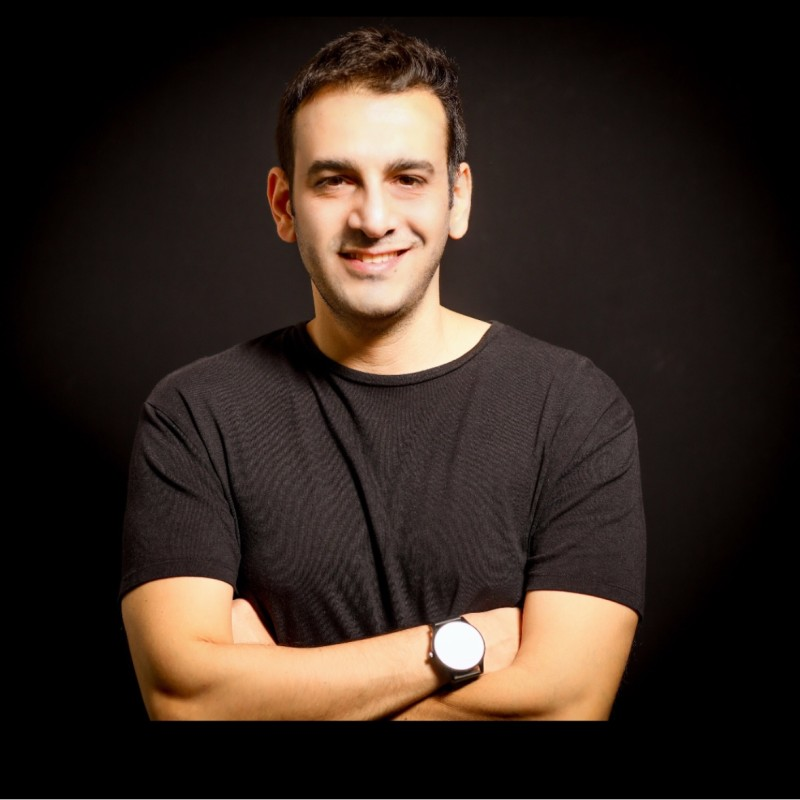

מאחורי כל דיווח אוטומטי עומד בן אדם עם רישיון. ה-AI עושה את העבודה השחורה — רואי חשבון מורשים, מנהלי חשבונות ומומחי שכר עושים את מה שדורש שיקול דעת, ואת מה שדורש חתימה.
כל דוח שיוצא מ-MyCompany לרשות המיסים, למס הכנסה או לרשם החברות נבדק ונחתם על ידי רואה חשבון מורשה בישראל. מנוע ה-AI מסווג תנועות ומכין טיוטות; ההחלטות המקצועיות, האישור והחתימה נעשים על ידי בן אדם. לכל לקוח רו״ח אחראי קבוע שמכיר את התיק.
מעודכן ל-2026

הקים את Ettorney — הפלטפורמה שהעבירה את פתיחת העסקים בישראל לאונליין — ומשם ראה את הבעיה הבאה מקרוב: אחרי שפותחים עסק, מתחילה רדיפה של שנים אחרי רואה החשבון. MyCompany נבנתה כדי לסגור בדיוק את הפער הזה: אותה נגישות שהייתה בפתיחת העסק, גם בניהול השוטף שלו.
התיק שלכם לא עובר בין מחלקות. אלה האנשים שנוגעים בו — כל אחד במה שהוא הכי טוב בו.
בודקים, מאשרים וחותמים על כל דוח שיוצא לרשויות. אחראים על התיק לאורך השנה, לא רק בעונת הדוחות.
חתימה ואחריות מקצועיתמטפלים בשוטף: התאמות בנקים, כרטסות, חריגות שה-AI סימן, ומה שדורש עין אנושית לפני דיווח.
הנהלת חשבונות אונלייןתלושים, דיווחי 102, טפסי 106 וסיום העסקה — כולל החישוב האמיתי של כמה עובד עולה מעבר לברוטו.
שכר לעובדיםפתיחת עוסק וחברה, תקנון, הסכמי מייסדים ושינויים ברשם החברות. המותג האחות שמלווה את העסק מהרגע הראשון.
פתיחה והסכמיםבונים ומאמנים את המנוע שמסווג את התנועות ומכין את הדיווחים — ואת האפליקציה שדרכה אתם רואים הכל.
הטכנולוגיההאנשים שעונים בוואטסאפ. לא מוקד תסריטים — אנשים שמכירים את התיק שלכם ויודעים לענות.
זמינות יומיתזה לא סלוגן — זו חלוקת אחריות שאנחנו מחויבים אליה. הנה איפה בדיוק עובר הקו.
אף דוח לא מוגש לרשויות בלי אישור אנושי.
בדיקת מחיר קצרה, ואנחנו נגיד לכם בדיוק מה נכלל ומי אחראי.